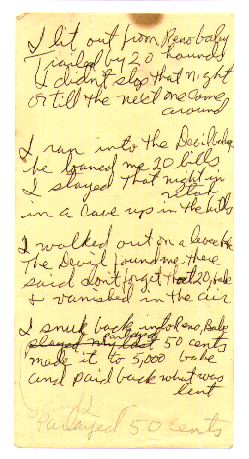

<html>
<head>
<title>The Annotated "Friend of the Devil"</title>
</head>
<body>
<i>"I set out running but I take my time..."</i>

<h2>The <i>Annotated</i> "Friend of the Devil"</h2>
An installment in <a href="gdhome.html"> The <i>Annotated</i> Grateful Dead Lyrics.</a><br>
By <a href="david.html">David Dodd</a><br>
1997-98 Research Associate, Music Dept., University of California Santa Cruz
<hr>
<a href="copyrigh.html">Copyright notice</a>
<hr>
Topic # 30 on the <a href="telnet://well.com">WELL's</a> Deadlit conference is about "Friend of the Devil."
<hr>
<a href="#title"><b>"Friend of the Devil"</b></a><br>
Words by Robert Hunter; music by Jerry Garcia and John Dawson<br>
Copyright Ice Nine Publishing; used by permission
<p>
<blockquote>
I lit out from <a href="#reno">Reno</a><br>
I was <a href="#hounds">trailed by twenty hounds</a><br>
Didn't get to sleep that night<br>
Till the morning came around<br>
<p>
I set out running but I take my time<br>
A friend of <a href="#devil">the Devil</a> is a friend of mine<br>
If I get home before daylight<br>
I might get some sleep tonight <br>
<p>
I ran into the Devil, babe<br>
He loaned me twenty bills<br>
I spent that night in <a href="#utah">Utah</a><br>
In a cave up in the hills<br>
<p>
I set out running but I take my time<br>
<a href="#morrissey">A friend of the devil is a friend of mine</a><br>
If I get home before daylight<br>
I might get some sleep tonight <br>
<p>
I ran down to the levee<br>
But the Devil caught me there<br>
He took my twenty dollar bill<br>
And he vanished in the air<br>
<p>
I set out running but I take my time<br>
A friend of the Devil is a friend of mine<br>
If I get home before daylight<br>
I might get some sleep tonight <br>
<p>
Got two reasons why I cry<br>
away each lonely night<br>
First one's named sweet Anne Marie<br>
and she's my heart's delight<br>
Second one is prison, baby<br>
the sheriff's on my trail<br>
If he catches up with me<br>
I'll spend my life in jail<br>
<p>
Got a wife in <a href="#chino">Chino</a>, babe<br>
And one in <a href="#cherokee">Cherokee</a><br>
First one says she's got my child<br>
But it don't look like me<br>
<p>
I set out running but I take my time<br>
A friend of the Devil is a friend of mine<br>
If I get home before daylight<br>
I might get some sleep tonight <br>
</blockquote>
<hr>
<h3><a name="title">"Friend of the Devil" </a></h3>
Hunter has posted the <a href="http://www.dead.net/RobertHunterArchive/files/HandwrittenLyrics/FriendOfDevil.html" target="new">manuscript</a> of an early draft of the song in his archives.
<p>
Recorded on
<ul>
<li><cite><a href="discog1.html#american">American Beauty</a></cite>
<li><cite><a href="discog1.html#deadset">Dead Set</a></cite>
<li><cite><a href="jgdisc.html#grisman">Jerry Garcia/David Grisman</a></cite>
<li>Hunter's <cite><a href="huntdisc.html#jack">Jack O'Roses</a></cite>
<li><cite><a href="discog1.html#dick5">Dick's Pick's, vol. 5</a></cite>
<li><cite><a href="discog1.html#dick11">Dick's Pick's, vol. 11</a></cite>
</ul>
<p>
The song has been covered fairly extensively:
<ul>
<li>The Done Gone Band included it on their self-titled album.
<li><a href="http://www.nrpsmusic.com/" target="new">The New Riders of the Purple Sage</a> on <cite>Live In Japan</cite>
<li><a href="http://www.lylelovett.net/" target="new">Lyle Lovett</a> covered it on <cite><a href="tribute.html#deadicated">Deadicated</a></cite>.
<li><a href="http://www.smither.com/" target="new">Chris Smither</a> on <ul>
<li><cite>Another Way to Find You</cite>
<li><cite>Don't Drag It On</cite>
</ul>
<li><a href="http://www.tomconstanten.com/" target="new">Tom Constanten</a> on <cite>Nightfall of Diamonds</cite>
</ul>
<p>
First performance was on February 28, 1970, at the <a href="http://www.familydog.com/" target="new">Family Dog</a> at the Great Highway, in San Francisco. The show featured a brief acoustic set sandwiched between two electric sets, and "Friend of the Devil" was in turn sandwiched between "The Monkey and the Engineer" and <a href="pete.html">"Black Peter."</a> It has remained in the repertoire ever since. The version played by the band in later years was a slow, stately one, inspired, according to Garcia, by a Kenny Loggins version of the song.
<p>
Bob Dylan covers the tune in concert.
<p>
Tom Petty and his band also covered FOTD, on January 20, 1997, at the Fillmore Auditorium. Anyone have a tape of this?
<p>
Hunter, in an interview in <cite><a href="biblio.html#relix">Relix</a></cite>, said:
<blockquote>
"I like 'Friend of the Devil'; I thought that was the closest we've come towhat may be a classic song." --Vol. 5, #2, p. 25.
</blockquote>
<p>
And in <cite><a href="biblio.html#hits">Behind the Hits</a></cite>, he describes the process of writing the song, on page 47.
<p>
Hunter's <a href="http://www.dead.net/RobertHunterArchive/files/newjournal/56journal_2006.html#anchor12558063">online journal entry of February 23, 2006</a>, gave his recollections of the origins of the song:
<blockquote>
Buddy Cage called last night and we had a good rave about plans to revive the Riders. He doesn't want to call it a reunion since, as he pointed out, half the guys are dead. He wants to call it a renaissance. Why not?
<p>
I was just remembering how Friend of the Devil got written. First off I wrote these four verses one afternoon back in 1969.
<p>

<p>
I was living in Madrone canyon with the Garcias. The NRPS had asked me if I wanted to play bass with them and it seemed like a good idea at the time. So I worked up that song on bass, added a few verses plus a chorus and went over to where David Nelson and John Dawson were living in Kentfield and taught them the tune. The "Sweet Anne Marie" verse which was later to become a bridge was only one of the verses, not yet a bridge. The chorus went:
<blockquote>
<em>
I set out running but I take my time<br>
It looks like water but it tastes like wine<br>
If I get home before daylight<br>
I just might get some sleep tonight.<br>
</em>
</blockquote>
<p>
I'd changed the fourth verse, about parlaying the twenty dollars into five thousand and, except for the all important Friend of the Devil hook, the lyrics were pretty much as they stand today minus a fifth verse which goes:
<blockquote>
<em>
You can borrow from the Devil<br>
You can borrow from a friend<br>
But the Devil give you twenty<br>
When your friend got only ten<br>
</em>
</blockquote>
<p>

We all went down to the kitchen to have espresso made in Dawson's new machine. We got to talking about the tune and John said the verses were nifty except for "it looks like water but it tastes like wine" which I had to admit fell flat. Suddenly Dawson's eyes lit up and he crowed "How about "a friend of the devil is a friend of mine." Bingo, not only the right line but a memorable title as well!
<p>
We ran back upstairs to Nelson's room and recorded the tune. I took the tape home and left it on the kitchen table. Next morning I heard earlybird Garcia (who hadn't been at the rehearsal - had a gig, you know) wanging away something familiar sounding on the peddle steel. Danged if it wasn't "Friend of the Devil." With a dandy bridge on the "sweet Anne Marie" verse. He was not in the least apologetic about it. He'd played the tape, liked it, and faster than you can say dog my cats it was in the Grateful Dead repertoire.
<p>
Although I learned all the tunes, I never did play a gig with the NRPS, who were doing strictly club dates at the time. For one reason or another I never quite fathomed, though I have my suspicions, I got shut out. Either that or I misread the signs and wasn't inclined to push. Nothing was ever said. In any event, a fellow named Dave Torbert showed up about that time. Just as well. One dedicated songwriter in the band was enough.
</blockquote>
<hr>
<h3><a name="reno">Reno</a></h3>
A city in Nevada, county seat of Washoe County. According to <cite><a href="biblio.html#place">The Illustrated Dictionary of Place Names</a></cite>, <a href="http://www.renonv.com/" target="new">Reno</a> was named for
<blockquote>
"Reno, Jesse Lee (1823-1862), Virginia-born Union general killed at the Battle of South Mountain during the Antietam campaign of the Civil War. He had previously served as an ordinance officer during various Western surveys, including those in Utah territory."
</blockquote>
<p>
It's interesting to note that Reno was originally in the Utah Territory, which makes the character's one-day run from Reno to Utah seem a little more believable. However, this condition existed for only eleven years (1850-1861), after which Nevada became its own territory, then its own state (1864).
<hr>
<h3><a name="hounds">trailed by twenty hounds</a></h3>
A note from a reader:
<blockquote>
Subject: Friend of the Devil<br>
Date: Mon, 04 Oct 1999 09:15:39 PDT<br>
From: "Ann Mary Quarandillo" <amq1@hotmail.com><br>
<p>
David -
<p>
I was reading your entry on Friend of the Devil and wanted to see what you
think on "I was trailed by twenty hounds."
<p>
I always thought this was a reference to the "hounds of hell" who work for
the Devil chasing down escaped souls or sinners and dragging them back to
Hell.
<p>
Also could relate to Robert Johnson's "Hellhound on my Trail" - the  image
is of a person who is unable to stop running, to eat or to sleep at night
because the hellhounds will invade his dreams and take his soul to hell
while he sleeps.
<p>
<blockquote>
Hellhound on My Trail (Robert Johnson)
<p>
I got to keep movin'<br>
I got to keep movin'<br>
blues fallin' down like hail<br>
blues fallin' down like hail<br>
Umm mmm mmm mmm<br>
blues fallin' down like hail<br>
blues fallin' down like hail<br>
And the days keeps on worryin' me<br>
there's a hellhound on my trail<br>
hellhound on my trail<br>
hellhound on my trail<br>
<br>
If today was Christmas Eve<br>
If today was Christmas Eve<br>
and tomorrow was Christmas Day<br>
If today was Christmas Eve<br>
and tomorrow was Christmas Day<br>
spoken: Aow, wouldn't we have a time, baby?<br>
<br>
All I would need my little sweet rider just<br>
to pass the time away, huh huh<br>
to pass the time away<br>
<br>
You sprinkled hot foot powder, mmm<br>
mmm, around my door<br>
all around my door<br>
You sprinkled hot foot powder<br>
all around your daddy's door, hmm hmm hmm<br>
It keep me with ramblin' mind, rider<br>
every old place I go<br>
every old place I go<br>
<br>
I can tell the wind is risin'<br>
the leaves tremblin' on the tree<br>
Tremblin' on the tree<br>
I can tell the wind is risin'<br>
leaves tremblin' on the tree<br>
hmm hmm hmm mmm<br>
All I need's my little sweet woman<br>
and to keep my company, hey hey hey hey<br>
my company<br>
</blockquote>
<p>
Or - could be none of the above!
<p>
Thanks for a great site - Ann Mary
</blockquote>
<hr>
<h3><a name="devil">The Devil</a></h3>
Here's an interesting comment from <cite><a href="biblio.html#eliade">Eliade</a></cite>:
<blockquote>
"<b>Devils</b>: The definition and derivation of the term <i>devil</i> need to be carefully delineated. This need for care in defining <i>devil</i> arises from the fact that the very class of creatures being designated as malign may have been originally benign or may be capable of acting in either a benign or malign way."
</blockquote>
<hr>
<h3><a name="morrissey">A friend of the devil is a friend of mine</a></h3>
The folk singer <a href="http://www.billmorrissey.net/" target="new">Bill Morrissey</a>, in his song "Car and Driver" on his  album <cite>Standing Eight</cite>, has a wonderful couplet:
<blockquote>
"Well I've just airbrushed my Econoline<br>
A friend of the devil is a friend of mine"
</blockquote>
The song is about equating cars with their drivers, and pokes fun at many segments of society--not singling out Deadheads... His work is highly recommended.
<p>
Another reference to this line comes from Don McLean's "American Pie". The following


comes from the <a href="http://www.faqs.org/faqs/music/american-pie/" target="new">Annotated American Pie</a>:


<blockquote>


'Cause fire is the devil's only friend


<p>


                        It's possible that this is a reference to


                        the Grateful Dead's "Friend of the Devil".


<p>


                        An alternative interpretation of the last four


                        lines is that they may refer to Jack Kennedy


                        and his quick decisions during the Cuban Missile


                        Crisis; the candlesticks/fire refer to ICBMs


                        and nuclear war.


<p>


</blockquote>

<p>
For a wonderful alternate take on the possible relationship between "Friend of the Devil" and "American Pie," see
Ed Chapin's <a href="http://web.archive.org/web/20010815073739/http://home.gwi.net/~central/ampie.htm">A Piece of the Pie</a>. (Now only available on the Internet Archive's Wayback Machine.)

<hr>


<h3><a name="utah">Utah</a></h3>


45th State of the Union, admitted 1896.


<blockquote>


"<a href="http://www.yahoo.com/Regional/U_S__States/Utah/" target="new">Utah</a>. From the Indian name <i>Ute</i>... variously defined as "in the tops


of the mountains", "high-up", "the land of the sun", and "the land of


plenty"." --<cite><a href="biblio.html#place">Illustrated Dictionary of


Place Names</a></cite>.


</blockquote>


<p>


Utah was a territory whose span embraced what is now Nevada, which, as noted


above in the note for "Reno," makes the protagonist's run from Reno to


Utah in a day somewhat more explicable.


<hr>


<h3><a name="chino">Chino</a></h3>


<blockquote>


"Chino, Calif. (San Bernardino Co.) From a land grant called Santa Ana del


Chino. <i>Chino</i> is Spanish for a person with mixed blood; probably the


landowner was a <i>chino</i>." --<cite><a href="biblio.html#place">Illustrated


Dictionary of Place Names</a></cite>.


</blockquote>


<p>


Also the location of a prison in the California system, mainly for the


criminally insane.


<hr>


<h3><a name="cherokee">Cherokee</a></h3>


There are several Cherokee's in California:
<ol>
<li>Cherokee, CA: Butte County, California (06007); Location: 39 38 47 N, 121 32 14 W
<li>Cherokee, CA: Nevada County, California (06057); Location: 39 22 13 N, 121 02 31 W
<li>Cherokee, CA: San Joaquin County, California (06077); Location: 38 09 31 N, 121 14 32 W
<li>Cherokee, CA: Tuolumne County, California (06109); Location: 37 58 54 N, 120 14 48 W
</ol>


(Source: U.S. Gazetteer: formerly a link to the Geographic Name Server at the University of Michigan, which no longer seems to exist.)


<p>


There are also towns named Cherokee in Alabama, Iowa, Kansas, North Carolina,


Oklahoma, and Texas.


<hr>


keywords: @crime, @devil, @levee, @geography<br>


DeadBase code: [FOTD]


<hr>


First posted: May 3, 1995<br>


Last revised: February 27, 2006


<pre>


</pre>


</body>


</html>

